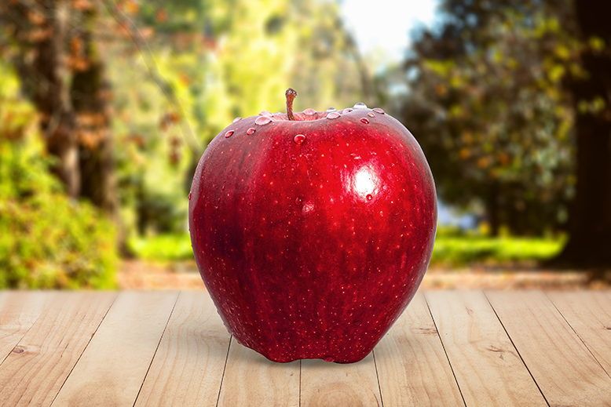
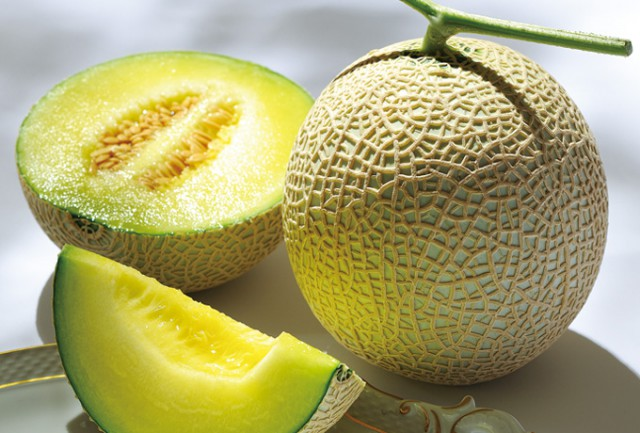
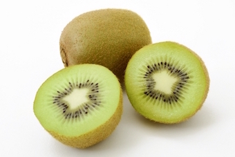
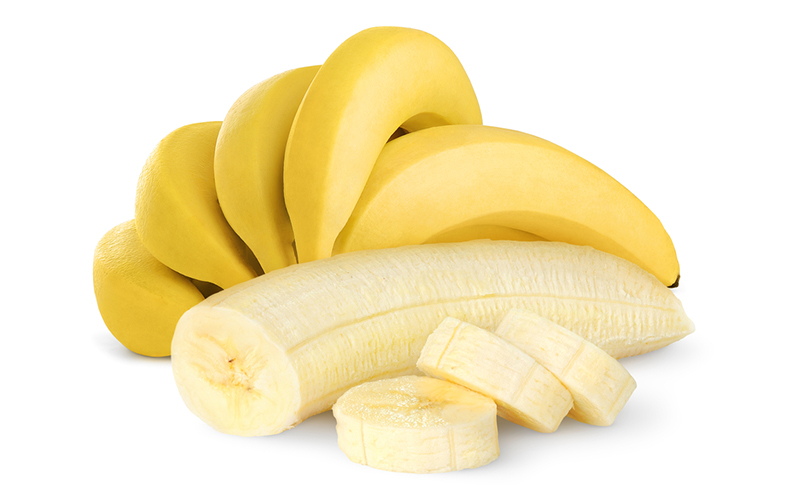

お知らせ
果物の里がリニューアルしました
トピックス
-
りんごには血中の悪玉コレステロールを40％も減らすことができます。2020/11/30
-
メロンにはとても水分量が多くて、１００ｇあたり４２kcalと果物類の中でも比較的低カロリーな食材です。2020/10/10
-
キウイには腸内環境を整える食物繊維や、塩分の排出を促すカリウムなど、健康や美容に必要な栄養素がぎっしり詰まっています。2020/10/03
-
 オレンジには粘膜を保護し、肌の調子を整え、免疫力を上げるビタミンCが多く含まれています。2020/08/20
オレンジには粘膜を保護し、肌の調子を整え、免疫力を上げるビタミンCが多く含まれています。2020/08/20 -
バナナには、でんぷん、ブドウ糖、果糖、ショ糖などが含まれていて、それぞれ体内に吸収される時間が異なり、エネルギー補給が長時間持続するのです。2020/08/11
welcome
果物の里にようこそ！